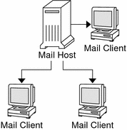
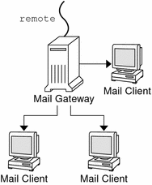

Previous
Previous
Mail Services (Tasks)
This chapter describes how to set up and administer mail services. If you are not familiar with administering mail services, read Chapter 12, Mail Services (Overview) for an introduction to the components of mail services. This chapter also provides a description of a typical mail service configuration, as shown in Figure 12-1. The following list can help you find groups of related procedures that are covered in this chapter.
See Chapter 14, Mail Services (Reference) for a more detailed description of the components of mail services. This chapter also describes the mail service programs and files, the mail routing process, the interactions of sendmail with name services, and the features in version 8.13 of sendmail that are not fully described in the sendmail(1M) man page.
Task Map for Mail Services
The following table refers you to other task maps that focus on a specific group of procedures.
Task | Description | For Instructions |
|---|---|---|
Setting up mail services | Use these procedures to set up each component of your mail service. Learn how to set up a mail server, a mail client, a mail host, a mail gateway, and a virtual host. Learn how to use DNS with sendmail. | |
Building a sendmail configuration file | Use this procedure to modify your sendmail.cf file. See an example of how to enable domain masquerading. | |
Setting SMTP to use Transport Layer Security (TLS) | Use this procedure to enable SMTP to have secure connections with TLS. | |
Managing mail delivery with an alternate configuration | Use this procedure to prevent mail delivery problems that can occur if the master daemon is disabled. | |
Administering mail alias files | Use these procedures to provide aliasing on your network. Learn how to manage entries in NIS+ tables. Also, learn how to set up an NIS map, a local mail alias, a keyed map file, and a postmaster alias. | |
Administering the mail queue | Use these procedures to provide smooth queue processing. Learn how to display and move the mail queue, force mail queue processing, and run a subset of the mail queue. Also, learn how to run the old mail queue. | |
Administering .forward files | Use these procedures to disable .forward files or change the search path of the .forward file. Also, learn how to permit users to use the .forward file by creating and populating /etc/shells. | |
Troubleshooting procedures and tips for mail services | Use these procedures and tips to resolve problems with your mail service. Learn how to test the mail configuration, check mail aliases, test the sendmail rule sets, verify connections to other systems, and log messages. Also, learn where to look for other mail diagnostic information. | Troubleshooting Procedures and Tips for Mail Services (Task Map) |
Resolving error messages | Use the information in this section to resolve some mail-related error messages. |
Planning Your Mail System
The following list describes some concerns that should be part of your planning process.
Determine the type of mail configuration that meets your requirements. This section describes two basic types of mail configuration and briefly lists what you need to set up each configuration. If you need to set up a new mail system or if you are expanding an existing one, you might find this section useful. Local Mail Only describes the first configuration type, and Local Mail and a Remote Connection describes the second type.
As necessary, choose the systems that are to act as mail servers, mail hosts, and mail gateways.
Make a list of all the mail clients for which you are providing service and include the location of their mailboxes. This list can help you when you are ready to create mail aliases for your users.
Decide how to update aliases and forward mail messages. You might set up an aliases mailbox as a place for users to send requests for mail forwarding. Users could also use this mailbox to send requests for changes to their default mail alias. If your system uses NIS or NIS+, you can administer mail forwarding, rather than requiring users to manage mail forwarding. Administering Mail Alias Files (Task Map) provides a list of tasks that are related to aliasing. Administering .forward Files (Task Map) provides a list of tasks that are related to managing .forward files.
After you have completed the planning process, set up the systems on your site to perform the functions that are described in Setting Up Mail Services (Task Map). For other task information, refer to Task Map for Mail Services.
Local Mail Only
The simplest mail configuration, as shown in Figure 13-1, is two or more workstations that are connected to one mail host. Mail is completely local. All the clients store mail on their local disks, and the clients act as mail servers. Mail addresses are parsed by using the /etc/mail/aliases files.
Figure 13-1 Local Mail ConfigurationTo set up this kind of mail configuration, you need the following.
The default /etc/mail/sendmail.cf file, which requires no editing, on each mail client system.
A server that is designated as the mail host. If you are running NIS or NIS+, you can make this designation by adding mailhost.domain-name to the /etc/hosts file on the mail host. If you are running another name service, such as DNS or LDAP, you must provide additional information in the /etc/hosts file. See How to Set Up a Mail Host.
If you are using a name service other than NIS or NIS+, you need matching /etc/mail/aliases files on any system that has a local mailbox.
Enough space in /var/mail on each mail client system to hold the mailboxes.
For task information about setting up your mail service, refer to Setting Up Mail Services. If you are looking for a particular procedure that is related to setting up your mail service, refer to Setting Up Mail Services (Task Map).
Local Mail and a Remote Connection
The most common mail configuration in a small network is shown in Figure 13-2. One system includes the mail server, the mail host, and the mail gateway that provides the remote connection. Mail is distributed by using the /etc/mail/aliases files on the mail gateway. No name service is required.
Figure 13-2 Local Mail Configuration With a UUCP ConnectionIn this configuration, you can assume that the mail clients mount their mail files from /var/mail on the mail host. To set up this kind of mail configuration, you need the following.
The default /etc/mail/sendmail.cf file on each mail client system. This file does not require any editing.
A server that is designated as the mail host. If you are running NIS or NIS+, you can make this designation by adding mailhost.domain-name to the /etc/hosts file on the mail host. If you are running another name service, such as DNS or LDAP, you must provide additional information in the /etc/hosts file. See How to Set Up a Mail Host.
If you are using a name service other than NIS or NIS+, you need matching /etc/mail/aliases files on any system that has a local mailbox.
Enough space in /var/mail on the mail server to hold the client mailboxes.
For task information about setting up your mail service, refer to Setting Up Mail Services. If you are looking for a particular procedure that is related to setting up your mail service, refer to Setting Up Mail Services (Task Map).